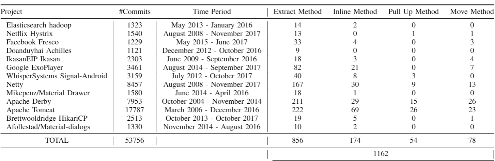
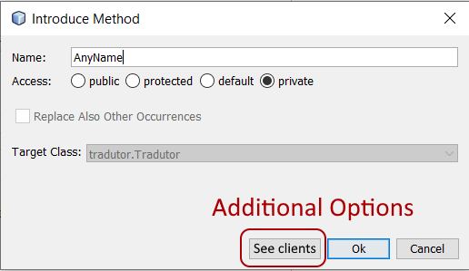

The untold story of refactoring customizations in practice
This website contains complementary data to the
paper.
Background:
Refactoring is a common software maintenance practice. While the literature defines standard code
modifications for each popular refactoring type, popular IDEs provide refactoring tools aiming to support
these standard modifications. Previous studies indicated that developers either frequently avoid using these
tools or end up modifying and even reversing the code automatically refactored by the IDE. This means that
developers are forced to manually apply refactorings partially or completely, which is cumbersome and
error-prone. All these factors indicate that refactoring support may not be entirely aligned with certain
refactoring activity needs. Thus, the improvement of tooling support for refactoring in practice requires
the understanding in what ways developers tailor refactoring modifications in their produced code. To
address this issue, we conduct an analysis of 1,162 refactorings composed of more than 100k program
modifications from 13 software projects. Our results reveal that developers recurrently apply patterns of
additional modifications along with the standard ones in their refactorings, from here on called patterns of
customized refactorings. For instance, we found customized refactorings in 80.77% of the
Move Method instances observed in software projects. We also investigated the features of
refactoring tools in popular IDEs and observed that very common customization patterns are not fully
supported by them. Additionally, to understand the relevance of these customizations, we conducted a survey
with 40 developers about the most frequent customization patterns we found. Developers confirm they
commonly apply those patterns in their projects and agree that improvements in IDE's refactoring support is
needed. These observations also suggest refactoring guidelines must be updated to reflect typical
refactoring customizations. The update of these guidelines can better help IDE builders to improve
customized refactoring support. We revealed a range of refactoring customization patterns for four very
popular refactoring types, which shed light on the improvement of existing refactoring guidelines and tool
support.
A code modification is part of the set of modifications of a refactoring operation identified by a refactoring detection tool. A refactoring operation also may contain additional modifications that interact with the source/target methods (Table 1).
By a manual analysis of the refactoring operations, we make decisions about how to decide if an additional modification is (not) part of a refactoring operation, which we describe as follows. First, we created filters to automatically identify and avoid questionable instances of refactorings. For instance, the filters avoided instances of refactorings where the source/target methods had parameters using diamond operators or the operator "...", once these operators allow the method to have any number of parameters, we are not able to detect the interaction with source/target methods correctly based on the method signature.
For modifications occurring within a source/target of an operation, we identified recurring forms of non-refactoring modifications (for each refactoring type), ignoring these modifications. We also double-checked whether any of these modifications was incorrectly classified as a non-refactoring modification.
For each external modification interacting with a source/target, we found out two cases of additional refactoring modifications: (1) external modifications that were clearly part of the refactoring operation and had nothing to do with a non-refactoring change, and (2) external modifications that we considered simultaneously pertaining to both the refactoring operation and another non-refactoring change, such as a feature addition. For the cases in (2), those modifications were part of the refactoring operation (even though they were also motivated by a feature change, L.805) as they only existed due to the structural alteration aimed by the refactoring. These modifications in (2) are those that typically determine “the interface” between the refactoring operation and other co-occurring (non-refactoring) changes. In fact, existing IDEs consider these “refactoring interfaces” as part of the refactoring operation as they already provide some preliminary support to customize these “interfaces”. For instance, existing IDEs support developers in customizing an Extract Method refactoring by enabling them to qualify a method as public, protected or private (which is not a standard modification in the Extract Method definition) to bind the refactoring modifications with the non-refactoring modifications. This binding is made only due to the refactoring operation (and, therefore, is part of it) as a new method creation is an intrinsic goal of the refactoring. Making the method accessible (to external non-refactoring changes) is a compulsory modification to introduce method calls from client methods that compose the most frequent customizations. Finally, there were cases of refactoring customizations that excluded standard modifications from the literature that we either detected by manual analysis or depended on additional information in the software project repository.
The list of projects is detailed below. The first column indicates the project name.
Then, we indicated the number of commits and the analyzed period. Finally, the last columns indicate the
number of refactoring instances. We collected only commits from the main/master branches, including merge requests for these branches.

Our study complements previous studies[8][14] and helps the development of refactoring tools well
aligned with refactorings in practice. Tool developers can use these catalogs to create flexible tools,
allowing developers to apply the patterns as a configuration of the tool or through recommendations.
For instance, the following image illustrates an additional configuration for Netbeans.
This new configuration should allow developers to handle the client methods that will be
affected by the refactoring, especially, to handle the modification *Method Access* that
composes the most frequent patterns. In this way, developers should be able to decide how each client method
should be affected.

For more complex patterns, composed of several modifications,
refactoring tools should allow developers to create their own
customization in a step-wise way, adding or removing code modifications
that compose each refactoring. Finally, these tools could also recommend
customized refactorings for each developer.
Internal Validity
a) RMiner may yield false positives and false negatives. It has an effectiveness of 87.2% for recall and 98%
for precision, which is the best effectiveness among refactoring detection tools. To alleviate this threat,
we manually inspected some instances identified by it during our analysis. Also, the newest versions of RMiner
improved mainly the recall value, which would not change the results since the number of false positives
(precision) is still similar in both versions.
b) Due to the practical need for floss refactoring, custom refactorings cannot be limited only to changes
that preserve the behavior. Otherwise, we would disregard common goals for developers such as making the code
more robust and fixing bugs that may often require the same additional code changes. Finally, customized
refactorings include only recurrent refactoring’s co-occurring changes that satisfy some
criteria. These changes should be semantically involved in the refactoring operation
and interact with the source or target methods. These criteria ensure a link between the
addressed code change and the standard changes of the refactoring. In some instances,
these changes were mentioned as critical for developers to achieve their goals.
Construct Validity
a) The RMiner detects 15 types of refactorings in version
1.0, but we are considering only four types of refactorings. Although these four
refactorings may not fully embrace all forms of refactoring customizations, these four refactorings have
been frequently applied by developers in practice. Also, these
refactorings affect the program structure differently at method-level and class-level. For instance,
Extract Method is a method-level refactoring, affecting directly especially one class. Different
from Extract Method, Move Methods, and Pull Up Methods affect at least two classes,
including changes affecting a class hierarchy. Yet, these refactorings have similarities with other
refactoring types, e.g. Move Method moves a method from one class to another, similarly to Push
Downs and Pull ups. We chose Pull Up to understand this method movement in the context
of a class hierarchy. We avoid textual refactorings such as renames. Given their simpler and
lexical nature, they have less room for structural customization. Also, any customization
exclusively from interleaved refactorings, such as Move and any other refactoring, would be
an addition to the customizations already present in our study and it does not affect our
results. Finally, the selected refactorings have (i) often a larger scope and a higher number of
customizations, and (ii) a much stronger relation to major design problems.
b) Although we are currently analyzing refactorings detected only by RMiner, it is possible
to observe that RMiner's detection rules include several statements which demonstrated to allow the
detection of a variety of refactorings instances, which can include possible customizations.
c) The collected modification types may not consider all possible modification types. We used Eclipse's JDT
library, once this library has a very low level of granularity. In this way, we can detect a large number of
modifications. Besides, this library is commonly used to build automated refactoring tools for Eclipse
and RMiner.
External Validity
We performed an in-depth analysis of refactoring instances from 13 Java
projects, which satisfy somep predefined criteria. Our results might not
necessarily hold to other projects involving other primary programming languages and/or from domains not
covered by our dataset. Moreover, we focused our analysis on open-source software projects. The nature of
refactoring in closed-source software projects is not necessarily the same as refactoring in open-source
software projects. However, popular open-source projects have a major concern with software modularity
tending to continuously refactor the source code. Finally, we analyzed projects with differing sizes/domains
and all key findings were uniform. The domains are: database management, libraries
to streaming systems, and libraries to social media. These projects have a viral
growth behavior and an active community, according to Github metrics. All projects are detailed on
this website and will be updated as necessary
Attention-1: Some browsers may automatically convert the .csv files to .xls when downloading the data. You
should convert back to correctly work.
Attention-2: Some modifications may have a different name in the data. Such as: Function -> Method,
Creation -> Declaration